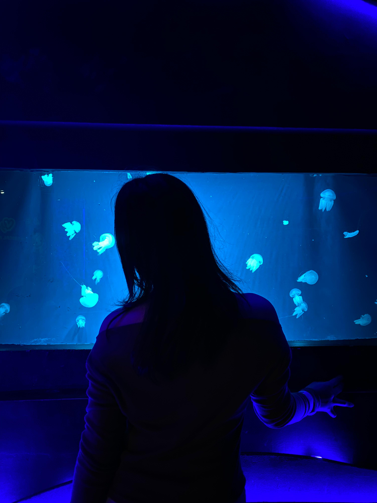

Every moment with you is a treasure, every day a blessing
Scroll down to discover our beautiful journey together ♥
Our Beautiful Story Begins
Every love story is beautiful, but ours is my favorite. Here are the moments that make my heart skip a beat...
Your radiant smile lights up my world ♥
Even at work, you're absolutely stunning
Words of Love
You are my today and all of my tomorrows.
— Leo Christopher
In all the world, there is no heart for me like yours. In all the world, there is no love for you like mine.
— Maya Angelou
I love you not only for what you are, but for what I am when I am with you.
— Roy Croft
You are my sun, my moon, and all of my stars.
— E.E. Cummings
Being deeply loved by someone gives you strength, while loving someone deeply gives you courage.
— Lao Tzu
The best love is the kind that awakens the soul and makes us reach for more, that plants a fire in our hearts and brings peace to our minds.
— Nicholas Sparks
Your natural beauty takes my breath away
Your happiness is my greatest joy
Love According to Scripture
Love is patient, love is kind. It does not envy, it does not boast, it is not proud. It does not dishonor others, it is not self-seeking, it is not easily angered, it keeps no record of wrongs.
1 Corinthians 13:4-5
Above all, love each other deeply, because love covers over a multitude of sins.
1 Peter 4:8
And now these three remain: faith, hope and love. But the greatest of these is love.
1 Corinthians 13:13
Place me like a seal over your heart, like a seal on your arm; for love is as strong as death, its jealousy unyielding as the grave.
Song of Solomon 8:6
Many waters cannot quench love; rivers cannot sweep it away.
Song of Solomon 8:7
Two are better than one, because they have a good return for their labor: If either of them falls down, one can help the other up.
Ecclesiastes 4:9-10
I have found the one whom my soul loves.
Song of Solomon 3:4
He has taken me to the banquet hall, and his banner over me is love.
Song of Solomon 2:4
Even through a screen, you make my heart skip
Perfect moments with my perfect person
Our Love Story Timeline
The Day We Met
From the moment I saw you, I knew my life would never be the same. Your smile lit up the entire room and my heart found its home.
Our First Conversations
Hours felt like minutes when we talked. Every word you spoke drew me deeper into your beautiful soul.
First "I Love You"
Three little words that changed everything. The moment I knew that what we had was real, deep, and forever.
Our Adventures Together
From aquarium visits to matching outfits, every moment with you becomes a treasured memory. You make ordinary days extraordinary.
Building Our Future
Every day I fall in love with you all over again. You are my present happiness and my future dreams all wrapped into one beautiful person.
Building memories together, one moment at a time
Two hearts, one smile - perfectly matched
Like the jellyfish floating gracefully in the ocean, you move through my life with such beauty and grace. Every moment with you feels like magic.

Like the jellyfish, you move gracefully through my heart